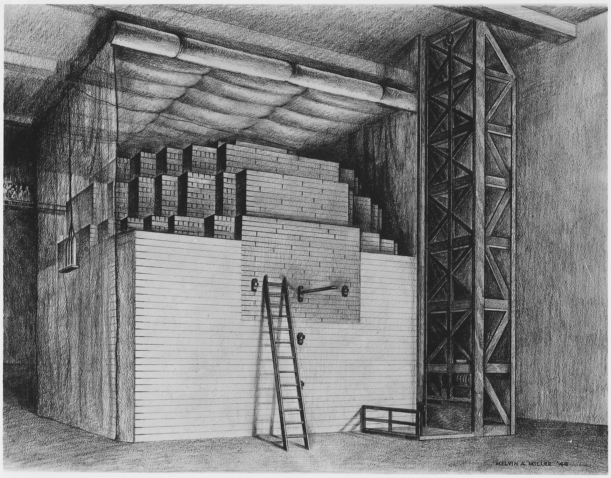
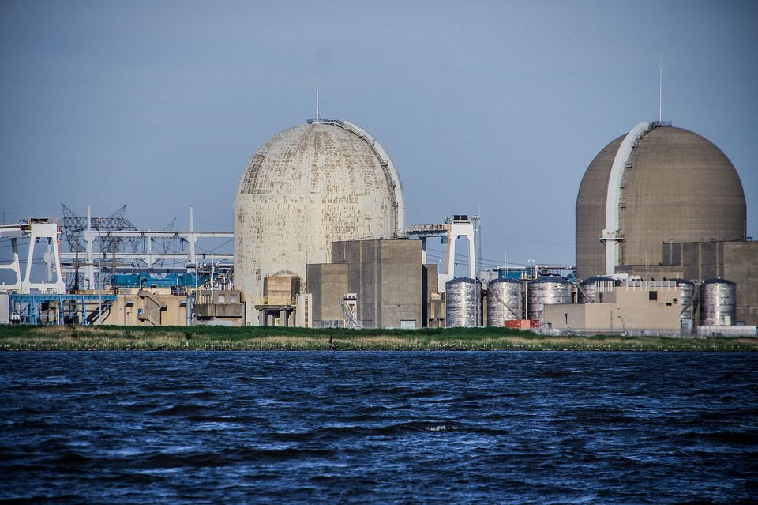

The first nuclear reactor was invented by a team led by Enrico Fermi in 1942. It was called Chicago Pile-1 (CP-1).
Nuclear energy hit a golden age during the 1970s and early 80s, with 1 new reactor being built every 17 days during the 1980s. Nuclear Power was built everywhere, even here in North Jersey with the Salem Nuclear Power Plant.
The most consequential moment in the history of nuclear energy by far, however, is Chernobyl. To this day, it is the costliest disaster in human history, with an estimated cost of $700 billion USD.